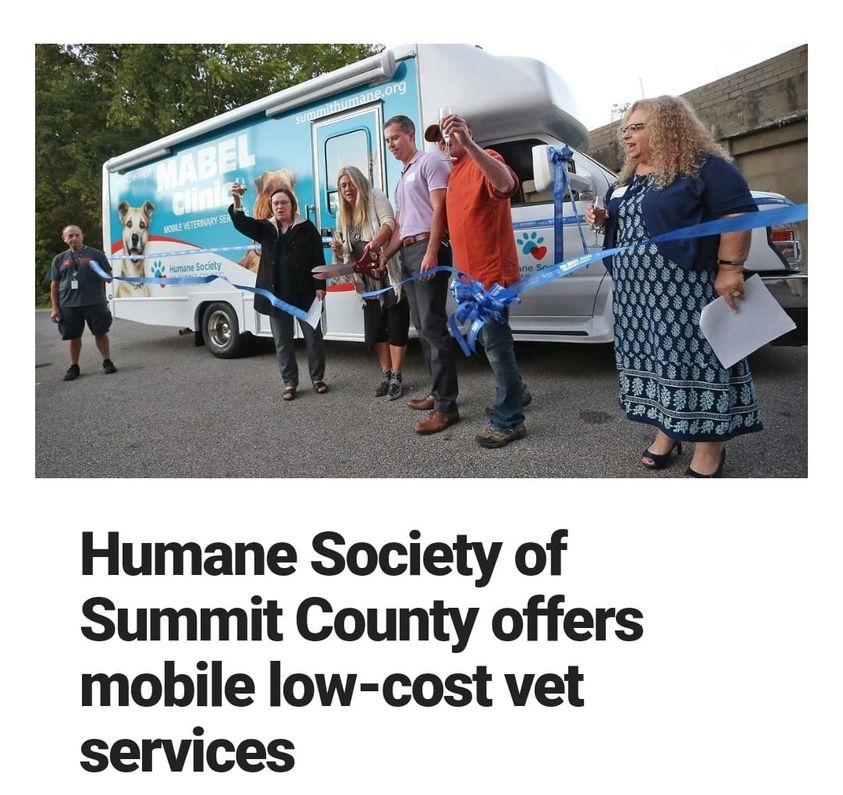

Mobile uploads
I'm glad Akron pets have low cost mobile health services. But why the hell do we care more about our pets than the men, women and children living on Akron's streets and in third world poverty conditions and we don't have something like this for them?